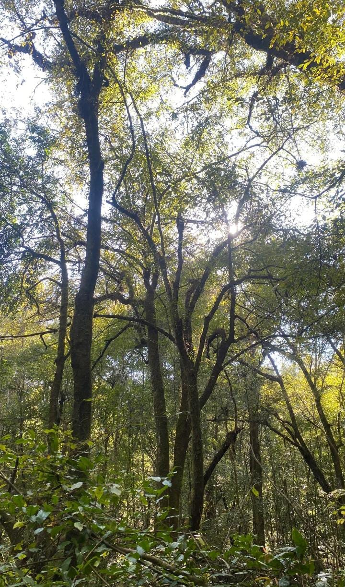
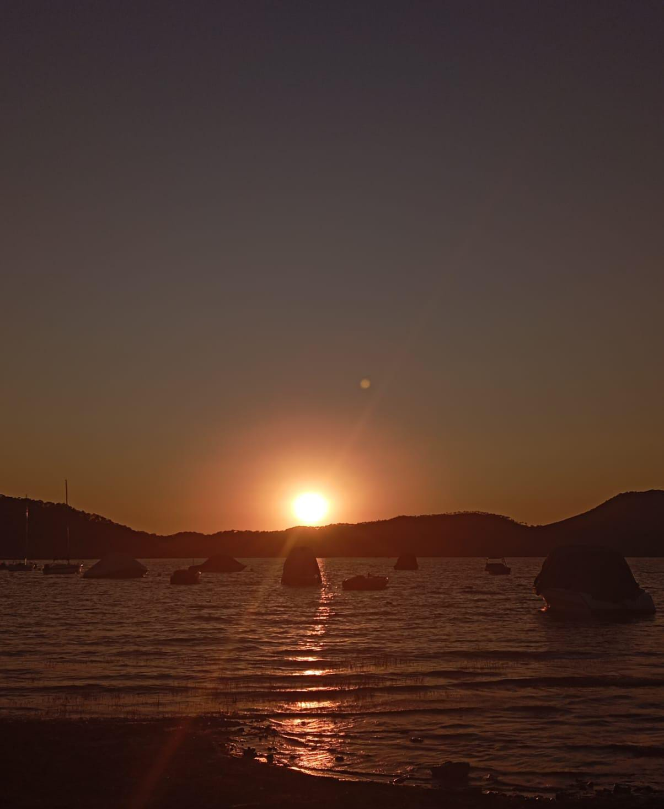

BOSQUE
¿Qué bosque tenemos?
En Valle más de la mitad es puro bosque, unas 26 mil hectáreas. La mayoría es de pino-encino, que es el que ves por todos lados, y arriba en Monte Alto y Cerro Gordo hay de oyamel, esos pinos altísimos que parecen de Navidad. Abajo en las cañadas donde siempre hay neblina como en Velo de Novia, hay bosque de niebla con mucho musgo.
¿Qué árboles viven aquí?
Aquí encuentras ocote, pino lacio que da piñones, encino blanco y rojo, y el famoso oyamel que es la casa de la mariposa monarca. Ese no se puede talar, es delito. En el suelo hay una alfombra de hojas secas que se vuelve abono y guarda el agua.
¿Para qué nos sirve?
Este bosque es nuestro aire acondicionado. Nos da oxígeno, nos guarda el agua de lluvia para que salga en los manantiales meses después y evita que la tierra se vaya al lago. Un solo árbol grande le da oxígeno a 4 personas todo el año.
¿Qué puedes hacer?
Puedes hacer senderismo por 6 kilómetros de caminos marcados, subir al mirador del Cerro Gordo, ir a la Laguna Negra, pasear a caballo y en bici de montaña. Es un lugar muy tranquilo para respirar aire puro.

EL AGUA, NUESTRO TESORO MÁS VALIOSO
¿Qué es realmente el lago?
La presa Miguel Alemán no es natural, la hicieron entre 1937 y 1947 e inundaron el pueblo viejo. Es enorme, 21 km², y guarda más de 400 millones de litros. De aquí toma agua el 30% de la CDMX, o sea 10 millones de personas. Si se seca Valle, se queda sin agua media ciudad
¿Qué es realmente el lago?
En el lago no se permite nadar con lanchas de gasolina para no contaminarlo, pero sí puedes hacer vela, kayak, paddle board, esquí acuático y paseos en yate. Hay más de quince embarcaderos y cada año en febrero hacen el Festival Internacional de Vela donde vienen veleristas de todo el mundo. Al atardecer el lago se pinta de color naranja y rosa y es el momento más bonito para tomar fotos.
¿Sabías que hay un pueblo debajo del agua?
Exactamente debajo del lago está el pueblo viejo de Valle. Cuando baja mucho el nivel del agua en temporada de secas se alcanzan a ver los restos de la antigua iglesia de San Francisco. Los abuelitos del pueblo cuentan que ellos vivían ahí antes de la inundación y tuvieron que mudarse a donde está el centro ahora.
Si cuidamos la laguna, la laguna nos cuida a nosotros. Es nuestro tesoro más valioso y es responsabilidad de todos protegerla.

LAGUNA NEGRA
Ubicación
Se encuentra en la comunidad de Pinal del Marquesado, a 15 minutos del centro de Valle de Bravo, Estado de México. Está dentro del Área Natural Protegida Monte Alto, por eso está rodeada de puro bosque.
Origen e historia.
Es una laguna de origen volcánico, era un cráter pequeño que con el tiempo se llenó de agua de manantial y de lluvia. Los pueblos mazahuas y matlazincas que vivían antes ahí la respetaban mucho, decían que era una laguna que se enojaba si gritabas y te mandaba lluvia.
Por qué se ve negra.
El agua no está sucia, se ve negra porque es muy profunda, el fondo es de lodo volcánico oscuro y los pinos y oyameles que están alrededor le hacen mucha sombra, entonces refleja todo oscuro.
Flora y fauna.
Hay muchos pinos, oyameles y encinos. En el agua hay truchas y ajolotes pequeños, y alrededor puedes ver ardillas, conejos y en invierno mariposas monarca porque está cerca de su santuario.
Qué se puede hacer.
Es un lugar tranquilo para ir a caminar, la vuelta a la laguna te lleva como 20 minutos. La gente va a hacer picnic, a tomar fotos y a rentar caballos. No se puede nadar ni meter lanchas porque es una reserva protegida.